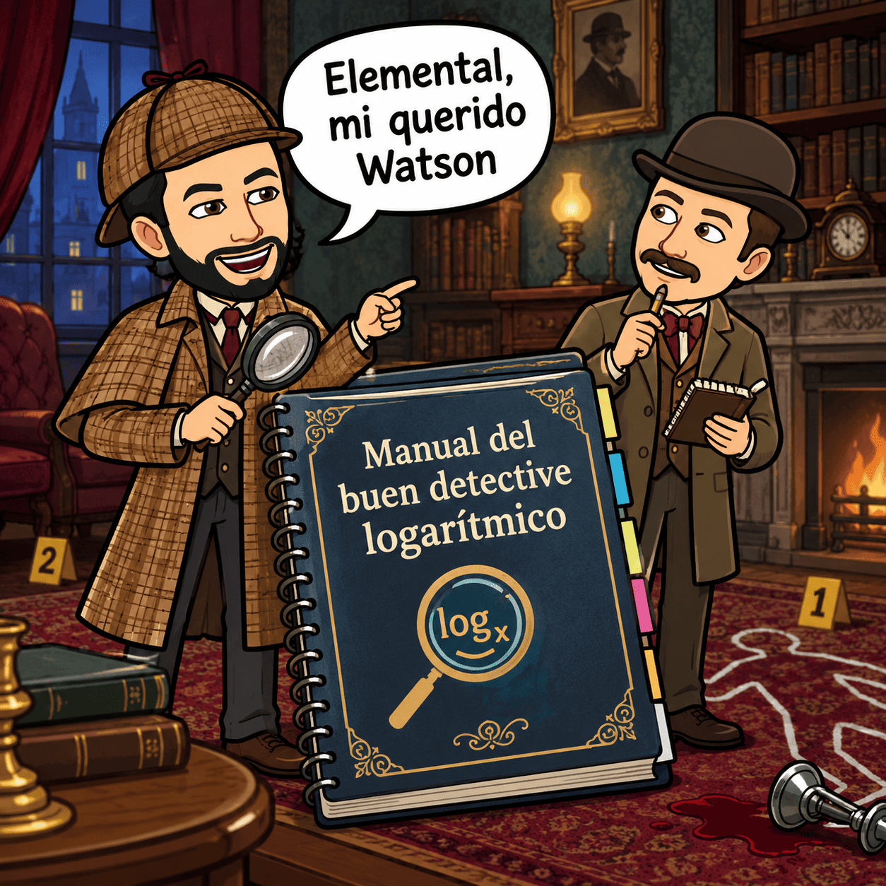
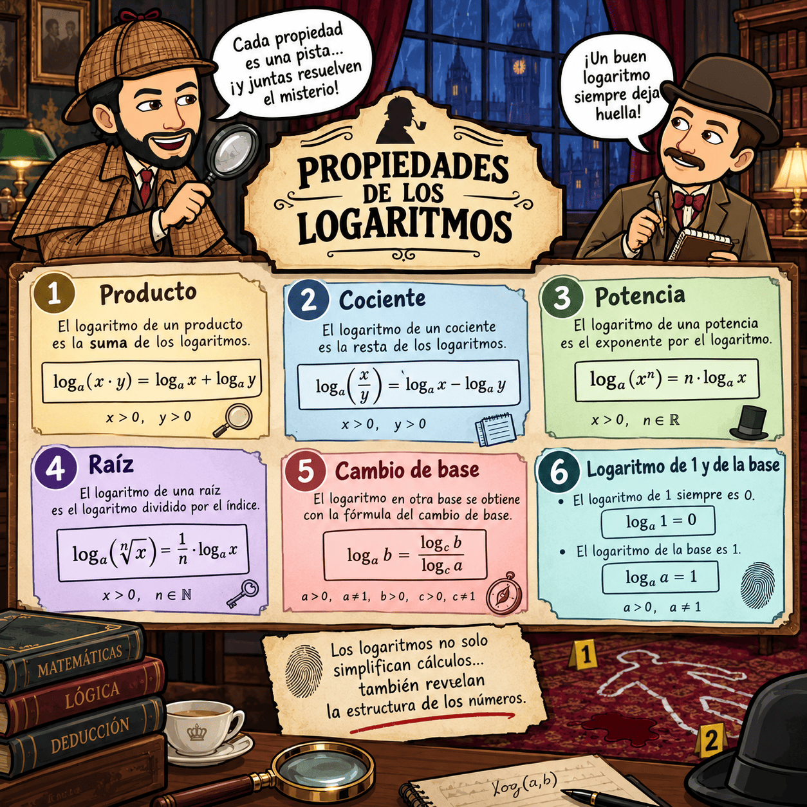

🔷 FASE MOTIVAR: El caso del número desconocido
Imagina que recibes este mensaje:
EXPEDIENTE e:
Se ha encontrado una expresión matemática aparentemente sencilla:
\(2^x=32\)
Sabemos que existe un número \(x\) que hace verdadera la igualdad.
¿Puedes descubrirlo?
Piensa durante unos segundos.
Sabemos que:
\(2^5=32\)
Por tanto:
\(x=5\)
El problema parece resuelto. Pero ahora aparece un nuevo caso:
\(\boxed{2^x=17}\)
Una nueva pregunta
¿Qué número debemos utilizar como exponente?
Podemos probar algunas potencias:
\(2^1=2\)
\(2^2=4\)
\(2^3=8\)
\(2^4=16\)
\(2^5=32\)
El número que buscamos está entre 4 y 5.
Pero ¿cómo podemos averiguar exactamente cuál es?
Aquí aparece el misterio.
Necesitamos una nueva herramienta matemática capaz de descubrir exponentes desconocidos.
Esa herramienta es el logaritmo.
(Para saber el valor concreto de \(2^x=17\), no te preocupes lo resolveremos más adelante (en la fase "3. EXPLORAR")).
🔧 FASE ACTIVAR: ¿Qué sabemos sobre las potencias?
Antes de descubrir cómo funcionan los logaritmos, vamos a recuperar algunos conocimientos que ya tienes.
Los logaritmos están directamente relacionados con las potencias, por lo que es importante recordar cómo funcionan.
Actividad 1. ¿Qué recuerdas?
Responde en tu cuaderno sin utilizar la calculadora.
A. Calcula las siguientes potencias
- \(2^3 =\)
- \(10^2 =\)
- \(3^4 =\)
B. Descubre el exponente
¿Qué exponente necesitamos para obtener 8181 a partir de 33?
Es decir:
\(3^{\square}=81\)
¿Qué exponente necesitamos para obtener 125125 a partir de 55?
\(5^{\square}=125\)
C. Piensa en la incógnita
¿Qué significa la expresión?
\(5^x=125\)
En la expresión anterior, ¿qué conocemos y qué estamos intentando descubrir?
Puesta en común
Compara tus respuestas con las de tus compañeros y compañeras.
Recuerda especialmente estas dos ideas:
\(3^4=81\) y \(5^3=125\)
En ambos casos conocemos la base y el resultado, pero queremos descubrir el exponente.
Precisamente esa es la pregunta que nos ayudará a comprender los logaritmos.
🔍 FASE EXPLORAR: Descubrimos los logaritmos
Ahora vamos a investigar la nueva herramienta matemática.
Una nueva forma de escribir la misma información
Ya sabemos que:
\(2^5=32\)
Esta igualdad nos dice que 5 es el exponente al que debemos elevar la base 2 para obtener 32.
Podemos expresar exactamente la misma información utilizando un logaritmo:
\(\boxed{\log_2 32=5}\)
Se lee:
"Logaritmo en base 2 de 32 igual a 5".
Observa que no hemos cambiado la información:
\(\boxed{2^5=32}\) y \(\boxed{\log_2 32=5}\)
significan exactamente lo mismo.
La idea fundamental
Un logaritmo responde a esta pregunta:
¿A qué exponente tengo que elevar la base para obtener el número que aparece dentro del logaritmo?
Por ejemplo:
\(\log_3 81=4\)
porque:
\(3^4=81\)
Y:
\(\log_5 125=3\)
porque:
\(5^3=125\)
Actividad 2. Descubre el exponente
Completa:
a) \(2^{\square}=8\)
Por tanto:
\(\log_2 8=\square\)
b) \(3^{\square}=27\)
Por tanto:
\(\log_3 27=\square\)
c) \(10^{\square}=1000\)
Por tanto:
\(\log_{10}1000=\square\)
d) \(4^{\square}=64\)
Por tanto:
\(\log_4 64=\square\)
Soluciones
a) 3
b) 3
c) 3
d) 3
2. La definición del logaritmo
A partir de ahora utilizaremos esta relación fundamental:
\(\boxed{\log_a b=c\iff a^c=b}\)
Esto significa:
El logaritmo de \(b\) en base \(a\) es el número \(c\) que indica el exponente al que debemos elevar \(a\) para obtener \(b\).
Por ejemplo:
\(\log_2 16=4\)
porque:
\(2^4=16\)
Y ahora podemos resolver nuestro misterio inicial...
Teníamos:
\(2^x=17\)
Podemos escribir:
\(x=\log_2 17\)
Este número no es un entero. Utilizando la calculadora:
\(\boxed{x\approx4'087}\)
Por tanto:
\(2^{4'087}\approx17\)
¡El expediente e comienza a resolverse!
FASE ESTRUCTURAR: ⚙️ Manual del buen detective
Sherlock Holmes y el doctor Watson necesitan un manual claro y fiable para poder ser un buen detective y no cometer errores en las investigaciones. Durante la explicación del profesor, tu misión será construir ese manual en tu cuaderno.

Durante la explicación, copia, organiza y completa en tu cuaderno los siguientes apartados:
🔹 1. Logaritmos
- Qué es un logaritmo (explicado con tus palabras).
- Relación entre potencia y logaritmo.
- Ejemplos sencillos.
🔹 2. Propiedades de los logaritmos
- Anota y explica:
- Logaritmo de un producto.
- Logaritmo de un cociente.
- Logaritmo de una potencia.
- Logaritmo de una raíz.
- Cambio de base de un logaritmo.
Incluye ejemplos de cada una.
🔹 3. Operaciones con logaritmos
- Realiza los ejemplos que se hagan en clase.
- Realiza los ejercicios, actividades y problemas del boletín que el profesor entregará.
¡Presta atención porque empezamos!
Esta será la parte principal de nuestro trabajo.
Durante esta fase aprenderás los logaritmos paso a paso, viendo ejemplos resueltos y practicando después con ejercicios similares.
1. ¿Qué es un logaritmo?
Un logaritmo responde a una pregunta muy concreta:
¿Cuál es el exponente al que tengo que elevar la base para obtener el número?
La definición es:
\(\boxed{\log_a b=c\iff a^c=b}\)
donde:
- \(a\) es la base.
- \(b\) es el argumento.
- \(c\) es el resultado del logaritmo.
La base debe cumplir:
\(a>0,\qquad a\neq1\)
Y el argumento debe ser positivo:
\(b>0\)
Ejemplo 1. Calcular un logaritmo
Calcula:
\(\log_2 8\)
Nos preguntamos:
¿A qué exponente tenemos que elevar 2 para obtener 8?
Como:
\(2^3=8\)
entonces:
\(\boxed{\log_2 8=3}\)
Ejemplo 2
\(\log_3 81\)
Buscamos el exponente al que elevar 3 para obtener 81:
\(3^4=81\)
Por tanto:
\(\boxed{\log_3 81=4} \)
Ejemplo 3
\(\log_5 1\)
Recordamos que:
\(5^0=1\)
Por tanto:
\(\boxed{\log_5 1=0} \)
Ejemplo 4
\(\log_7 7\)
Como:
\(7^1=7\)
entonces:
\(\boxed{\log_7 7=1} \)
2. La relación entre potencias y logaritmos
Potencias y logaritmos son operaciones inversas.
Si:
\(2^5=32\)
podemos escribir:
\(\log_2 32=5\)
Por eso conviene aprender a pasar de una forma a otra.
Por ejemplo
Transforma:
\(3^4=81\)
en forma logarítmica.
La base es 3, el resultado es 81 y el exponente es 4:
\(\boxed{\log_3 81=4}\)
Ahora al contrario:
\(\log_4 64=3\)
significa que:
\(\boxed{4^3=64}\)
3. Cálculo de logaritmos
Cuando el argumento es una potencia de la base, el cálculo es directo.
Ejemplo 5
\(\log_2 16\)
Como:
\(2^4=16\)
entonces:
\(\boxed{\log_2 16=4}\)
Ejemplo 6
\(\log_3 243\)
Como:
\(3^5=243\)
entonces:
\(\boxed{\log_3 243=5}\)
Ejemplo 7
\(\log_2 \frac18\)
Escribimos:
\(\frac18=2^{-3}\)
Por tanto:
\(\log_2(2^{-3})=-3\)
\(\boxed{\log_2\frac18=-3} \)
Actividad 2. Calcula
Calcula sin calculadora.
a) \(\log_2 32\)
b) \(\log_3 27\)
c) \(\log_5 125\)
d) \(\log_2 \frac1{16}\)
e) \(\log_{10}1000\)
Soluciones:
a) \(2^5=32 \qquad \boxed{5}\)
b) \(3^3=27 \qquad \boxed{3}\)
c) \(5^3=125 \qquad \boxed{3}\)
d) \(\frac1{16}=2^{-4} \qquad \boxed{-4}\)
e) \(10^3=1000 \qquad \boxed{3}\)
4. Propiedades de los logaritmos
Las propiedades de los logaritmos nos permiten transformar expresiones complicadas en otras más sencillas.
Estas propiedades son fundamentales.
Propiedad 1. Logaritmo de un producto
El logaritmo de un producto se convierte en una suma:
\(\boxed{\log_a(x\cdot y)=\log_a x+\log_a y}\)
Ejemplo
\(\log_2(8\cdot4)\)
Aplicamos la propiedad:
\(\log_2 8+\log_2 4\)
Calculamos:
\(3+2=5\)
Por tanto:
\(\boxed{\log_2(8\cdot4)=5}\)
Propiedad 2. Logaritmo de un cociente
El logaritmo de un cociente se convierte en una resta:
\(\boxed{\log_a\left(\frac{x}{y}\right)=\log_a x-\log_a y}\)
Ejemplo
\(\log_2\left(\frac{32}{4}\right)\)
Aplicamos la propiedad:
\(\log_2 32-\log_2 4 =5−2\qquad \boxed{3} \)
Propiedad 3. Logaritmo de una potencia
El exponente pasa multiplicando delante del logaritmo:
\(\boxed{\log_a(x^n)=n\log_a x}\)
Ejemplo
\(\log_2(8^2)\)
Aplicamos la propiedad:
\(\log_2 8\)
Como:
\(\log_2 8=3\)
obtenemos:
\(2\cdot3=6\)
Por tanto:
\(\boxed{\log_2(8^2)=6}\)
Propiedad 4. Logaritmo de una raíz
Como una raíz puede escribirse como una potencia:
\(\sqrt[n]{x}=x^{1/n}\)
entonces:
\({\log_a\sqrt[n]{x}=\frac1n\log_a x}\)
Ejemplo
\(\log_2\sqrt{16}\)
Podemos calcular primero:
\(\sqrt{16}=4\)
y:
\(\log_2 4=2\)
Por tanto:
\(\boxed{2}\)
También podemos utilizar la propiedad:
\(\log_2(16^{1/2}) = \log_2 16 = \frac12\cdot4 = 2\)
5. El gran resumen de las propiedades
Aprende a reconocer estas cuatro situaciones:
| Si aparece... | Podemos transformar en... |
| \(\log_a(xy)\) | \(\log_a x+\log_a y\) |
| \(\log_a(x/y)\) | \(\log_a x-\log_a y\) |
| \(\log_a(x^n)\) | \(n\log_a x\) |
| \(\log_a\sqrt[n]{x}\) | \(\frac1n\log_a x\) |
Una forma sencilla de recordarlo:
- Producto → suma
- Cociente → resta
- Potencia → multiplicación
- Raíz → división

6. "Sacar" elementos fuera del logaritmo
Ahora vamos a hacer el proceso contrario.
Tenemos:
\(\log_2(8^3)\)
El exponente puede salir del logaritmo:
\(3\log_2 8\)
Y como:
\(\log_2 8=3\)
obtenemos:
\(3\cdot3=9\)
Por tanto:
\(\boxed{\log_2(8^3)=9} \)
Ejemplo 8. Saca los exponentes
Simplifica:
\(\log_3(x^4)\)
Aplicamos la propiedad de la potencia:
\(\boxed{4\log_3x} \)
Ejemplo 9
Simplifica:
\(\log_5\left(\sqrt{x}\right)\)
Como:
\(\sqrt{x}=x^{1/2}\)
tenemos:
\(\log_5(x^{1/2})\)
Sacamos el exponente:
\(\boxed{\frac12\log_5x}\)
7. El "castillo": sacar todo lo que podamos
Ahora aparecen expresiones más grandes.
Ejemplo 10
Desarrolla:
\(\log_2(8x^3)\)
Primero observamos que tenemos un producto:
\(\log_2 8+\log_2(x^3) \)
Ahora aplicamos la propiedad de la potencia:
\(\log_2 8+3\log_2x\)
Como:
\(\log_2 8=3\)
obtenemos:
\(\boxed{3+3\log_2x} \)
Ejemplo 11
Desarrolla:
\(\log_3\left(\frac{27x^2}{y}\right)\)
Primero separamos el cociente:
\(\log_3(27x^2)-\log_3y\)
Separamos el producto:
\(\log_3 27+\log_3(x^2)-\log_3y\)
Sacamos el exponente:
\(\log_3 27+2\log_3x-\log_3y\)
Como:
\(\log_3 27=3\)
obtenemos:
\(\boxed{3+2\log_3x-\log_3y} \)
Ejemplo 12
Desarrolla:
\(\left(\frac{x^3\sqrt y}{8}\right)\)
Primero:
\(\log_2(x^3\sqrt y)-\log_2 8\)
Después:
\(\log_2(x^3)+\log_2(\sqrt y)-\log_2 8\)
Ahora sacamos los exponentes:
\(3\log_2x+\frac12\log_2y-\log_2 8\)
Como:
\(\log_2 8=3\)
queda:
\(\boxed{3\log_2x+\frac12\log_2y-3} \)
8. Ahora hacemos el camino contrario: meter dentro del logaritmo
Hasta ahora hemos sacado elementos.
Ahora vamos a hacer lo contrario.
Si tenemos:
\(\log_2x+\log_2y\)
podemos utilizar la propiedad del producto:
\(\boxed{\log_2(xy)} \)
Ejemplo 13
Expresa como un único logaritmo:
\(\log_3x+\log_3y\)
Como una suma corresponde a un producto:
\(\boxed{\log_3(xy)}\)
Ejemplo 14
Expresa como un único logaritmo:
\(\log_2x-\log_2y\)
Una resta corresponde a un cociente:
\(boxed{\log_2\left(\frac{x}{y}\right)} \)
Ejemplo 15
Expresa como un único logaritmo:
\(3\log_5x\)
El 3 puede convertirse en exponente:
\(\boxed{\log_5(x^3)} \)
Ejemplo 16
Expresa como un único logaritmo:
\(2\log_3x-\log_3y\)
Primero convertimos el 2 en exponente:
\(\log_3(x^2)-\log_3y\)
Ahora juntamos la resta:
\(\boxed{\log_3\left(\frac{x^2}{y}\right)} \)
9. El "castillo inverso"
Cuando quieras meter elementos dentro del logaritmo, piensa:
- Número multiplicando → exponente
- Suma → producto
- Resta → cociente
Ejemplo 17
Expresa como un único logaritmo:
\(2\log_2x+3\log_2y-\log_2z\)
Primero:
\(\log_2(x^2)+\log_2(y^3)-\log_2z\)
Después:
\(\log_2(x^2y^3)-\log_2z\)
Finalmente:
\(\boxed{\log_2\left(\frac{x^2y^3}{z}\right)} \)
10. Un castillo completo
Simplifica:
\(\log_2\left(\frac{8x^2\sqrt y}{z^3}\right)\)
Paso 1. Producto del numerador
\(\log_2 8+\log_2(x^2)+\log_2(\sqrt y)-\log_2(z^3)\)
Paso 2. Sacamos los exponentes
\(\log_2 8+2\log_2x+\frac12\log_2y-3\log_2z\)
Paso 3. Calculamos el logaritmo conocido
\(3+2\log_2x+\frac12\log_2y-3\log_2z\)
Resultado
\(\boxed{3+2\log_2x+\frac12\log_2y-3\log_2z} \)
11. Cambio de base
Hasta ahora hemos trabajado sobre todo con bases sencillas.
Pero podemos encontrarnos con:
\(\log_7 20\)
No es fácil calcularlo mentalmente.
Aquí utilizamos el cambio de base:
\(\boxed{\log_a b=\frac{\log_c b}{\log_c a}}\)
Podemos elegir como nueva base 10:
\(\boxed{\log_a b=\frac{\log b}{\log a}}\)
o la base \(e\):
\(\boxed{\log_a b=\frac{\ln b}{\ln a}} \)
Ejemplo 18
Calcula aproximadamente:
\(\log_2 10\)
Utilizamos cambio de base:
\(\log_2 10= \frac{\log 10}{\log2}\)
Como:
\(\log10=1\)
obtenemos:
\(log2\log_2 10=\frac1{\log2}\)
Con calculadora:
\(\boxed{\log_2 10\approx3,322} \)
Ejemplo 19
Calcula:
\(\log_5 17\)
Aplicamos cambio de base:
\(\log_5 17= \frac{\log17}{\log5}\)
Con calculadora:
\(\boxed{\log_5 17\approx1,761} \)
Ejemplo 20. Elegimos la base que nos interese
Calcula:
\(\log_3 20\)
Podemos utilizar:
\(\log_3 20= \frac{\ln20}{\ln3}\)
Por tanto:
\(\boxed{\log_3 20\approx2,727} \)
12. Mezclamos todas las herramientas
Ahora vamos a resolver ejercicios en los que tendremos que decidir qué propiedad utilizar y en qué orden.
Ejemplo 21
Simplifica:
\(\log_2(4x^3)\)
Producto:
\(\log_2 4+\log_2(x^3)\)
Potencia:
\(\log_2 4+3\log_2x\)
Cálculo:
\(\boxed{2+3\log_2x} \)
Ejemplo 22
Simplifica:
\(\log_3\left(\frac{9x^2}{y^3}\right)\)
Cociente:
\(\log_3(9x^2)-\log_3(y^3)\)
Producto:
\(\log_3 9+\log_3(x^2)-\log_3(y^3)\)
Potencias:
\(2+2\log_3x-3\log_3y\)
Por tanto:
\(\boxed{2+2\log_3x-3\log_3y} \)
Ejemplo 23
Expresa como un único logaritmo:
\(\log_2x+\log_2y-3\log_2z\)
Pasamos los números a exponentes:
\(\log_2(x^2)+\log_2y-\log_2(z^3)\)
Juntamos la suma:
\(\log_2(x^2y)-\log_2(z^3)\)
Juntamos la resta:
\(\boxed{\log_2\left(\frac{x^2y}{z^3}\right)}\)
13. Actividades de entrenamiento
Ahora te toca a ti.
Actividad 3. Calcula
- \(\log_2 64\) =
- \(\log_3 81\) =
- \(\log_5 625\) =
- \(\log_{10}100000\) =
- \(\log_2\frac1{32}\) =
- \(\log_4 16\) =
Soluciones:
- \(\boxed{6}\)
- \(\boxed{4}\)
- \(\boxed{4}\)
- \(\boxed{5}\)
- \(\boxed{-5}\)
- \(\boxed{2}\)
Actividad 4. Desarrolla los logaritmos
- \(log2(8x2)\log_2(8x^2)\):
- Solución: \(\log_2 8+\log_2(x^2) = 3+2\log_2x 3+2log2x\boxed{3+2\log_2x}\)
- \(\log_3\left(\frac{27x}{y^2}\right)\)
- Solución: \(\log_3 27+\log_3x-\log_3(y^2) =3+\log_3x-2\log_3y = \boxed{3+\log_3x-2\log_3y}\)
- \(\log_5\left(\sqrt{x^2y}\right)\)
- Solución: \(\log_5\left((x^2y)^{1/2}\right) = \frac12\log_5(x^2y)=\frac12(2\log_5x+\log_5y) = \boxed{\log_5x+\frac12\log_5y}\)
14. Actividades de "meter dentro"
Actividad 5
Expresa como un único logaritmo.
- \(\log_2x+\log_2y\)
- Solución: \(\boxed{\log_2(xy)}\)
- \(\log_3x-\log_3y\)
- Solución: \(\boxed{\log_3\left(\frac{x}{y}\right)}\)
- \(4\log_5x\)
- Solución: \(\boxed{\log_5(x^4)}\)
- \(\log_2x+\log_2y\)
- Solución: \(\boxed{\log_2(x^2y)}\)
- \(3\log_7x-2\log_7y\)
- Solución: \(\boxed{\log_7\left(\frac{x^3}{y^2}\right)}\)
15. Actividades de "sacar fuera"
Actividad 6
Desarrolla completamente.
- \(\log_2(x^5)\)
- Solución: \(\boxed{5\log_2x}\)
- \(\log_3(x^2y^4)\)
- Solución: \(\log_3(x^2)+\log_3(y^4) = \boxed{2\log_3x+4\log_3y}\)
- \(\log_5\left(\frac{x^3}{y^2}\right) \)
- Solución: \(\log_5(x^3)-\log_5(y^2) = \boxed{3\log_5x-2\log_5y}\)
- \(log_2\left(\frac{x^4\sqrt y}{z}\right) \)
- Solución: \(\log_2(x^4)+\log_2(\sqrt y)-\log_2z = \boxed{4\log_2x+\frac12\log_2y-\log_2z} \)
- Solución: \(\log_2(x^4)+\log_2(\sqrt y)-\log_2z = \boxed{4\log_2x+\frac12\log_2y-\log_2z} \)
16. Reto de detectives
Ahora tienes que decidir tú qué propiedades necesitas.
Reto 1
Simplifica:
\(\log_2\left(\frac{16x^3}{y^2}\right)\)
Solución:
\(\log_2 16+\log_2(x^3)-\log_2(y^2) = 4+3\log_2x-2\log_2y\)
\(\boxed{4+3\log_2x-2\log_2y} \)
Reto 2:
Expresa como un único logaritmo:
\(3\log_2x+\log_2y-\log_2z\)
Solución:
\(\log_2(x^3)+\log_2y-\log_2z\)
\(\boxed{\log_2\left(\frac{x^3y}{z}\right)} \)
Reto 3
Calcula:
\(\log_2 40\)
Utilizamos cambio de base:
\(log2\log_2 40 = \frac{\log40}{\log2}\)
Con calculadora:
\(\boxed{\log_2 40\approx5,322}\)
Reto 4
Sabiendo que:
\(\log_2x=3\)
calcula:
\(\log_2(x^2)\)
Aplicamos la propiedad de la potencia:
\(\log_2(x^2)=2\log_2x\)
Como:
\(\log_2x=3\)
tenemos:
\(2\cdot3=6 \)
\(\boxed{6}\)
🚀 FASE APLICAR: ¡Aplicamos lo aprendido!
Ha llegado el momento de comprobar si puedes utilizar lo aprendido sin que el profesor te indique qué propiedad debes aplicar.
Durante esta fase realizarás tres retos diferentes.
RETO 1 · Simulacro de examen
Realizarás un simulacro de examen sobre los contenidos trabajados en esta situación de aprendizaje.
El objetivo no será solamente comprobar cuánto sabes, sino detectar qué contenidos necesitas seguir practicando antes de la prueba final.
Durante el simulacro:
- Lee cada ejercicio con atención.
- Escribe los pasos.
- No te limites a escribir el resultado.
- Comprueba tus operaciones.
- Si te atascas, continúa con otro ejercicio y vuelve después.
Al terminar, revisa tus errores y anota en tu cuaderno:
- Lo que mejor sé hacer es...
- Lo que necesito seguir practicando es...
- La propiedad de los logaritmos que más me cuesta es...
RETO 2 · Juego matemático
Ahora pondrás a prueba tus conocimientos mediante un juego matemático de logaritmos.
El objetivo será utilizar de manera rápida y correcta:
- la definición de logaritmo;
- el cálculo de logaritmos;
- las propiedades de producto, cociente y potencia;
- el cambio de base;
- la transformación de expresiones;
- y el razonamiento matemático.
Recuerda:
No gana quien hace las operaciones más deprisa, sino quien razona y utiliza correctamente las propiedades matemáticas.
RETO 3 · Crea tu propia guía detectivesca de logaritmos
Ahora tendrás que convertirte en profesor o profesora por un momento.
Tu misión será crear una infografía-resumen de los logaritmos que pueda servir a otro estudiante de 4.º ESO para repasar antes de un examen.
¿Qué debe aparecer?
Tu infografía debe incluir, como mínimo:
- Definición
Explica qué es un logaritmo y escribe su relación con las potencias. - Elementos de un logaritmo
Identifica:- base;
- argumento;
- resultado.
- Propiedades
Incluye ejemplos de:- producto;
- cociente;
- potencia;
- raíz.
- Cálculo de logaritmos
Incluye al menos dos ejemplos. - Cambio de base
Explica la fórmula e incluye un ejemplo. - "Meter dentro"
Explica cómo transformar una expresión formada por varios logaritmos en un único logaritmo.
Incluye un ejemplo. - "Sacar fuera"
Explica cómo desarrollar un logaritmo utilizando sus propiedades.
Incluye un ejemplo. - Errores frecuentes
Incluye al menos dos errores que debemos evitar.
Por ejemplo- No podemos hacer: \(\log(x+y)=\log x+\log y\) porque la propiedad del producto solamente funciona cuando tenemos una multiplicación: \(\log(xy)=\log x+\log y \)
Y hay una condición especial...
Tu infografía tendrá que estar audiodescrita con tu propia voz.
Puedes realizarlo mediante:
- un vídeo en el que aparezca la infografía y expliques su contenido;
- o un audio acompañado de la infografía.
No se trata de leer rápidamente lo que aparece escrito.
Tu explicación debe ayudar a otra persona a entender los logaritmos.
Por ejemplo:
"En esta parte de la infografía aparece la propiedad del producto. Cuando tenemos el logaritmo de una multiplicación, podemos separar la expresión en dos logaritmos que se suman..."
La explicación oral debe demostrar que entiendes lo que estás explicando.
🏁 FASE CONCLUIR · EVALUAR: ¡Concluimos!
El caso está a punto de cerrarse... y con ello Sherlock Holmes está a punto de capturar al malvado profesor Moriarty.
Has investigado:
- qué son los logaritmos;
- cómo se calculan;
- su relación con las potencias;
- sus propiedades;
- el cambio de base;
- cómo sacar elementos de un logaritmo;
- cómo introducir elementos dentro de un logaritmo;
- y cómo simplificar expresiones.
Ahora llega la prueba final.
Prueba final
Realizarás un examen de logaritmos en el que tendrás que demostrar individualmente lo aprendido durante la situación de aprendizaje.
Recuerda:
Antes de resolver
Lee.
¿Qué me están pidiendo?
Mientras resuelves
Razona.
¿Qué propiedad necesito?
Mientras escribes
Explica.
No olvides los pasos.
Antes de entregar
Comprueba.
¿El resultado tiene sentido?
Entrega final
También entregarás tu infografía-resumen audiodescrita.
Antes de entregarla, comprueba:
- ☐ He incluido la definición de logaritmo.
- ☐ He explicado la relación entre logaritmos y potencias.
- ☐ He incluido las propiedades.
- ☐ He puesto ejemplos.
- ☐ He explicado el cambio de base.
- ☐ He explicado cómo meter elementos dentro.
- ☐ He explicado cómo sacar elementos fuera.
- ☐ He incluido errores frecuentes.
- ☐ He realizado la explicación con mi propia voz.
- ☐ Mi explicación demuestra que entiendo las matemáticas.
- ☐ La información se entiende con claridad.
Mi reflexión final
Después de terminar la situación de aprendizaje, completa estas frases en tu cuaderno:
- Ahora sé que un logaritmo...
- La propiedad que mejor comprendo es...
- La propiedad que todavía necesito practicar es...
- El error que debo evitar es...
- Lo que más me ha ayudado a aprender ha sido...
- Si tuviera que explicar los logaritmos a un compañero o compañera, empezaría diciendo...
Para cerrar el expediente...
Los logaritmos dejaron de ser un misterio cuando aprendiste a hacerte la pregunta correcta:
¿A qué exponente tengo que elevar la base para obtener este número?
A partir de ahí, las propiedades te permiten transformar, simplificar y resolver expresiones cada vez más complejas.